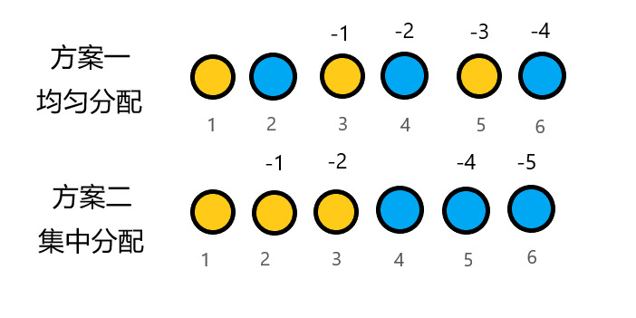
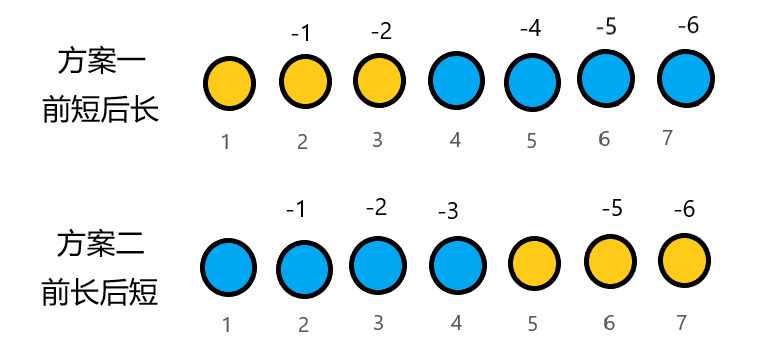

Solution to「SCOI2016」背单词。
题解 P3294。
我们看到字典树这个标签，下意识想到了前缀。
但是题目让我们求后缀，所以我们把所有字符串先 reverse 一下，将问题转化为前缀，方便描述。
我们发现，因为 \(y < x \le n\)，所以三种情况的花费排序为 \(x-y<x<n\times n\)。
不难发现，我们可以很简单地通过「把某单词的所有前缀单词放到它之前」消除开销为 \(n\times n\) 的情况。此时开销最劣情况下为 \(\sum\limits_{i=1}^ni < n\times n\)。
接下来，问题在于怎样在满足「把某单词的所有前缀单词放到它之前」的条件下，最小化开销。不难发现，当我们去除第一种情况后，剩下的 \(x\) 和 \(x-y\) 都包含 \(x\) 项，也就是说，我们只需要最小化 \(\sum -y\) 的值，也就是最大化 \(\sum y\) 的值。而 \(\sum x\) 为定值 \(\sum\limits_{i=1}^ni\)。
关于处理方式：不难发现一个单词的最长前缀单词最多只有一个，但以该单词为最长前缀单词的单词可能有多个，联想到树。
我们将每个单词的最长前缀和该单词连边，会得到一个森林。
不妨先考虑问题的简化，假设有两条链（即，不会同时存在多个单词，使得它们的最长前缀单词相同），应该如何安排其顺序。
如图所示，考虑「同一条链均匀分散到序列中」和「同一条链集中在一起」两种有规律的安排方式，得到：

可以发现，第二种情况明显更优。
所以我们扩展猜想：对于某一单词，以它为前缀的所有单词必须紧随其后。该结论是可递归的。
继续处理细节部分。考虑两条链长度不同，应如何排列它们的位置？
下图展示了「前短后长」和「前长后短」两种方案：

可以发现，前短后长的方案更优。
扩展得到猜想，同一单词的所有子树中，大小更小的应在更前面。该结论是可递归的。
接下来对猜想进行证明。
假设现在已有一条链。我们只有把整条链连在一起，短单词放到长单词前面这一种方法。
然后新来了一个不属于这条链的节点，明显，因为节点不管放到哪里，其 \(y\) 值不变，但会改变已有链的 \(y\) 值，所以放到最前面最优。
又来了一个节点，和刚才新增的节点属于同一条链，一样，不管这个节点何去何从，其 \(y\) 不变，但放在越前面，后面的节点的 \(y\) 值增加得越多。
以此类推可得到结论，同一条链放到一起。短链放到长链前面也是比较好想的。假设有两条链，短链长度为 \(a\)，长链长度为 \(b\)，放置起点为 \(l\)，则前短后长和钱长后短的 y 之和分别为 \(\dfrac{(l + l + a - 2) \times (a - 1) + (l + a + l + a + b - 2) \times (b - 1)} 2\) 和 \(\dfrac{(l + l + b - 2) \times (b - 1) + (l + b + l + b + a - 2) \times (b - 1)} 2\)（运用等差数列求和公式），解不等式可得前短后长一定更优。
接下来是从链扩展到树。那么我们想到了什么？树链剖分。
我们化用树剖思想，以最轻边为剖分条件，将树划分为有顺序的链，按照上述方式排列其顺序即可。
此时我们记录下每个单词的直系父亲（即其最长前缀单词），在唯一序列中模拟计分操作，即可得到答案。
为了方便，可将所有入度为 \(0\) 的点与一个虚点相连，将森林转化为树。
注意 long long。
namespace XSC062 {
using namespace fastIO;
using str = std::string;
const int maxn = 1e6 + 5;
const int maxm = 1e6 + 5;
str s[maxn];
int T[maxm][26];
int kaz[maxn], siz[maxn]; // kaz 表示单词在最终序列中所处的位置
std::vector<int> g[maxn];
int n, l, res, cnt = 1, ti;
int tot[maxm], fa[maxn], deg[maxn];
void Insert(int k) {
int f = 1, len = s[k].length();
for(int i = 0; i < len; ++i) {
if (!T[f][s[k][i] - 'a'])
T[f][s[k][i] - 'a'] = ++cnt;
f = T[f][s[k][i]-'a'];
}
tot[f] = k;
return;
}
void Search(int k) {
int f = 1;
int len = s[k].length();
for (int i = 0; i < len; ++i) {
f = T[f][s[k][i] - 'a'];
if (tot[f]) {
if (tot[f] != k)
fa[k] = tot[f]; // 记录当前最长前缀
}
}
return;
}
void add(int x, int y) {
++deg[y];
g[x].push_back(y);
return;
}
void DFS1(int x) { // 提前计算每个子树的 size
siz[x] = 1;
for (auto i : g[x]) {
DFS1(i);
siz[x] += siz[i];
}
return;
}
void DFS2(int x) {
kaz[x] = ti++; // 时间戳即为单词位置
std::sort(g[x].begin(), g[x].end(),
[&](int x, int y) { return siz[x] < siz[y]; }); // 按子树 size 排序
for (auto i : g[x])
DFS2(i);
return;
}
int main() {
scanf("%lld", &n);
for (int i = 1; i <= n; ++i) {
std::cin >> s[i];
std::reverse(s[i].begin(), s[i].end()); // 后缀转前缀
Insert(i);
res += i;
}
for (int i = 1; i <= n; ++i) {
Search(i);
if (fa[i])
add(fa[i], i); // 建图
}
for (int i = 1; i <= n; ++i) {
if (!deg[i]) // 建虚点方便操作
add(n + 1, i), fa[i] = n + 1;
}
DFS1(n + 1), DFS2(n + 1);
for (int i = 1; i <= n; ++i)
res -= kaz[fa[i]]; // 处理 y 值
print(res);
return 0;
}
} // namespace XSC062